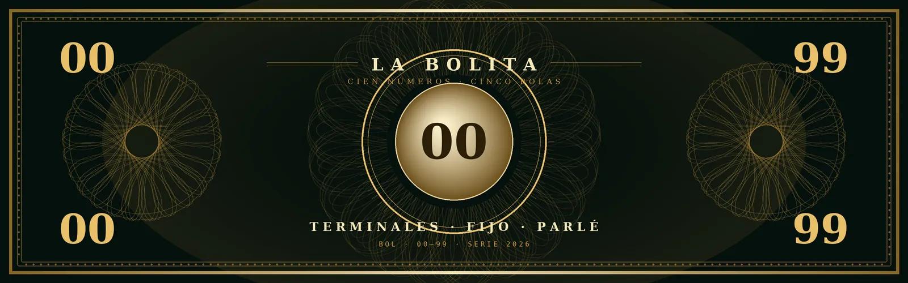

La de siempre, con sus tres formas de jugar. Escoge terminales, un número solo o un parlé, y espera el bombo.
Cada forma paga distinto porque cada una tiene su dificultad. Cuanto más paga, menos se puede apostar de una vez.
esperando el sorteo
Escoge tus números y dale a jugar.
Los cien números con su nombre de siempre. Filtra por familia o pulsa uno para jugarlo directo.
cómo se sostiene la banca
La banca nunca acepta una apuesta que no pueda pagar. Antes de tomar el dinero calcula cuánto tendría que pagar si esa jugada acertara. Si esa cifra pasa del límite, la apuesta se rechaza y no entra.
Por eso cada número tiene un cupo. Cuando se llena, ese número se cierra y hay que jugar otro. No es una restricción caprichosa: es lo que garantiza que siempre haya con qué pagar a quien acierte.
El cupo sale del pago. Un parlé paga mucho más que un terminal, así que su cupo es mucho más pequeño. El sistema se equilibra solo.
| Terminales · paga 8× | $2.50 |
| Número solo · paga 16× | $1.25 |
| Parlé · paga 400× | $0.05 |
Que se llenen todos los cupos de terminales y salga el premiado:
| Entra en la banca | $25.00 |
| Se paga al ganador | −$20.00 |
| La banca gana | +$5.00 |
Solo puede salir un resultado, así que solo se paga uno. Aunque se llene todo, la banca sale ganando.
Que se llene un solo cupo y justo ese sea el premiado:
| Entra | $2.50 |
| Se paga | −$20.00 |
| Pérdida | −$17.50 |
Es el máximo que se puede perder en un sorteo. Y como los cupos se recalculan sobre lo que queda, la banca se encoge pero nunca llega a cero.
Si la banca crece, los cupos suben en proporción sin que nadie los toque. Cuanto más se juega, más grande se puede jugar.
De la diferencia entre lo que se paga y lo que costaría un juego perfectamente parejo. Es la misma cuenta de toda la vida: la banca se queda un 20% de lo jugado a largo plazo. Habrá quien gane y quien pierda, pero en conjunto ese es el margen. Así funciona la bolita de siempre y así funciona esta.
cinco números, tres formas de jugar
Salen cinco números del 00 al 99. El primero es el fijo y es el que manda para los terminales.
Juegas un dígito del 0 al 9. Aciertas si el fijo termina en ese dígito. El terminal 4 cubre el 04, 14, 24, 34, 44, 54, 64, 74, 84 y 94. Uno de cada diez.
Juegas un número del 00 al 99. Aciertas si aparece entre los cinco que salen. Cinco de cada cien.
Juegas dos números. Aciertas si los dos aparecen entre los cinco. Es lo más difícil y por eso lo que más paga.
Cada día sale su verso, como toda la vida. Es tradición y ambiente: no tiene relación con el número que sale ni la puede tener. Cada quien decide si guiarse por él o jugar lo que le dé la gana.
El sorteo se resuelve en cadena y queda registrado. Ni la banca puede saber el resultado antes de tiempo ni cambiarlo después.
lo que cobra cada jugada
| Terminales un dígito, 1 de cada 10 | 8× |
| Número solo un número, 5 de cada 100 | 16× |
| Parlé dos números, los dos tienen que salir | 400× |
| $1 al terminal 7 y sale | cobras $8 |
| $1 al número 38 y sale | cobras $16 |
| $0.05 al parlé 38–97 y salen | cobras $20 |
Cada jugada tiene un tope. Cuanto más paga, más pequeño es el tope, porque la banca solo acepta lo que puede pagar. Si un número se llena, juega otro o espera al próximo sorteo.